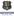

🏆 EURO 2024
| Date | Fixture  Bold-faced team is selected by AIGoalie to win. Bold-faced team is selected by AIGoalie to win. |
Odds Pre-match odds of the selected team winning. Note that odds are fetched once per day at 00:00 GMT, meaning some matches may have live odds. Also odds may not be available for all leagues. |
Win How confident AIGoalie is that the selected team will win. Low confidence indicates unpredictability of the match. ▼ |
Result Whether the selected team won, drew, or lost. |
Over The minimum number of goals predicted by AIGoalie. ⚽ = over 0.5 ⚽⚽ = over 1.5 ⚽⚽⚽ = over 2.5 ... ► |
Alerts Home 🏥 = Considerable injuries 🏥🏥 = Major injuries 📉 = Dip in form Note, you may see injuries when expanding match but no alert here, meaning the model does not consider them important. |
Alerts Away 🏥 = Considerable injuries 🏥🏥 = Major injuries 📉 = Dip in form Note, you may see injuries when expanding match but no alert here, meaning the model does not consider them important. |
|---|
🏆 Copa América 2024
| Date | Fixture Bold-faced team is selected by AIGoalie to win. |
Odds Pre-match odds of the selected team winning. Note that odds are fetched once per day at 00:00 GMT, meaning some matches may have live odds. Also odds may not be available for all leagues. |
Win How confident AIGoalie is that the selected team will win. Low confidence indicates unpredictability of the match. ▼ |
Result Whether the selected team won, drew, or lost. |
Over The minimum number of goals predicted by AIGoalie. ⚽ = over 0.5 ⚽⚽ = over 1.5 ⚽⚽⚽ = over 2.5 ... ► |
Alerts Home 🏥 = Considerable injuries 🏥🏥 = Major injuries 📉 = Dip in form Note, you may see injuries when expanding match but no alert here, meaning the model does not consider them important. |
Alerts Away 🏥 = Considerable injuries 🏥🏥 = Major injuries 📉 = Dip in form Note, you may see injuries when expanding match but no alert here, meaning the model does not consider them important. |
|---|
🌍 Global
| Date | Fixture Bold-faced team is selected by AIGoalie to win. |
Odds Pre-match odds of the selected team winning. Note that odds are fetched once per day at 00:00 GMT, meaning some matches may have live odds. |
Win How confident AIGoalie is that the selected team will win. Low confidence indicates unpredictability of the match. ▼ |
Result Whether the selected team won, drew, or lost. |
Over The minimum number of goals predicted by AIGoalie. ⚽ = over 0.5 ⚽⚽ = over 1.5 ⚽⚽⚽ = over 2.5 ... ► |
Alerts Home 🏥 = Considerable injuries 🏥🏥 = Major injuries 📉 = Dip in form Note, you may see injuries when expanding match but no alert here, meaning the model does not consider them important. |
Alerts Away 🏥 = Considerable injuries 🏥🏥 = Major injuries 📉 = Dip in form Note, you may see injuries when expanding match but no alert here, meaning the model does not consider them important. |
|
|---|---|---|---|---|---|---|---|---|
| Thu. 04 Jul. | FCSB  3:0  CS Corvinul 1921 Hunedoara Form: LLLW Form: WLWL |
1.4 vs -2.13 | 1.43 | 74% | ✓ | ⚽ 1.81 |
📉 Home team has a dip in form recently | 📉 Away team has a dip in form recently |
| Thu. 04 Jul. | Paide Linnameeskond  2:2  JK Trans Narva Form: WLWD Form: WLLD |
1.06 vs -1.81 | 1.62 | 71% | ⁃ | ⚽⚽ 2.74 |
📉 Home team has a dip in form recently | 📉 Away team has a dip in form recently |
| Thu. 04 Jul. | Dinamo Minsk  1:0  Dynamo Brest Form: WWWW Form: WLDL |
0.94 vs -1.65 | 68% | ✓ | ⚽⚽⚽ 3.14 |
📉 Away team has a dip in form recently | ||
| Thu. 04 Jul. | Shamrock Rovers  1:0  Dundalk FC Form: LWLW Form: LWLL |
0.88 vs -1.78 | 1.41 | 65% | ✓ | ⚽ 1.52 |
📉 Home team has a dip in form recently | 📉 Away team has a dip in form recently |
| Thu. 04 Jul. | University College Dublin  1:2  Athlone Town AFC Form: WDDL Form: WDWL |
-1.48 vs 0.74 | 60% | ✓ | ⚽ 1.63 |
📉 Home team has a dip in form recently | 📉 Away team has a dip in form recently | |
| Thu. 04 Jul. | Thór Akureyri  19:00  ÍF Grótta Form: DLDD Form: WDWD |
0.57 vs -1.47 | 53% | ⚽ 1.66 |
📉 Home team has a dip in form recently | 📉 Away team has a dip in form recently | ||
| Thu. 04 Jul. | Sacramento Republic FC  0:1  Las Vegas Lights FC Form: LDWL Form: DDWW |
0.49 vs -1.37 | 1.79 | 49% | ❌ | ⚽ 1.45 |
📉 Home team has a dip in form recently | |
| Thu. 04 Jul. | FCI Levadia  1:0  FC Flora Tallinn Form: WWWW Form: DWDL |
0.46 vs -1.12 | 47% | ✓ | ⚽ 1.86 |
📉 Away team has a dip in form recently | ||
| Thu. 04 Jul. | Manta FC  1:2  AD Nueve de Octubre Form: WWLW Form: LLLW |
0.43 vs -1.3 | 2.34 | 44% | ❌ | ⚽ 1.11 |
📉 Home team has a dip in form recently | 📉 Away team has a dip in form recently |
| Thu. 04 Jul. | Charlotte FC  1:2  Inter Miami CF Form: DWLL Form: WWWW |
-1.29 vs 0.42 | 3.55 | 43% | ✓ | ⚽⚽ 2.59 |
📉 Home team has a dip in form recently | 🏥🏥 Away team has MAJOR injuries |
| Thu. 04 Jul. | Treaty United  0:1  Cobh Ramblers FC Form: WWLL Form: WLDW |
0.36 vs -1.07 | 2.44 | 39% | ❌ | ⚽ 1.77 |
📉 Home team has a dip in form recently | 📉 Away team has a dip in form recently |
| Thu. 04 Jul. | New York City FC  2:0  CF Montréal Form: LLLW Form: DLWL |
0.34 vs -1.19 | 1.44 | 37% | ✓ | ⚽ 1.46 |
📉 Home team has a dip in form recently | 📉 Away team has a dip in form recently |
| Thu. 04 Jul. | Esporte Clube Bahia  2:0  Esporte Clube Juventude Form: LWWL Form: LWLW |
0.33 vs -1.2 | 36% | ✓ | ⚽⚽ 2.41 |
📉 Home team has a dip in form recently | 📉 Away team has a dip in form recently | |
| Thu. 04 Jul. | Waterford FC  1:0  St. Patrick's Athletic Form: LWWW Form: DWDL |
-0.93 vs 0.3 | 2.64 | 34% | ❌ | ⚽ 1.94 |
📉 Away team has a dip in form recently | |
| Thu. 04 Jul. | NSÍ Runavík II 23:00 AB Argir Form: WWDL Form: LDWW |
0.28 vs -1.08 | 32% | ⚽⚽ 2.58 |
📉 Home team has a dip in form recently | |||
| Thu. 04 Jul. | Grêmio Foot-Ball Porto Alegrense  2:2  Sociedade Esportiva Palmeiras Form: LLDW Form: WWLW |
-1.36 vs 0.28 | 32% | ⁃ | ⚽ 1.99 |
🏥 📉 Home team has considerable injuries and a dip in form recently | 🏥🏥 📉 Away team has MAJOR injuries and a dip in form recently | |
| Thu. 04 Jul. | Wexford FC  1:3  Cork City FC Form: LDWD Form: WWWW |
0.28 vs -0.87 | 32% | ❌ | ⚽ 1.39 |
📉 Home team has a dip in form recently | ||
| Thu. 04 Jul. | TB Tvøroyri 0:1 Víkingur Göta II Form: LDWL Form: DWWL |
-0.77 vs 0.27 | 32% | ✓ | ⚽ 1.85 |
📉 Home team has a dip in form recently | 📉 Away team has a dip in form recently | |
| Thu. 04 Jul. | Dong A Thanh Hoa FC  2:1  Thep Xanh Nam Dinh FC Form: WDLD Form: DDWW |
-0.84 vs 0.26 | 31% | ❌ | ⚽⚽⚽ 3.0 |
🏥 📉 Home team has considerable injuries and a dip in form recently | ||
| Thu. 04 Jul. | Red Bull Bragantino  3:1  Atlético Clube Goianiense Form: WLDW Form: LDDD |
0.25 vs -0.89 | 30% | ✓ | ⚽⚽ 2.03 |
📉 Home team has a dip in form recently | 📉 Away team has a dip in form recently | |
| Thu. 04 Jul. | D.C. United  2:3  FC Cincinnati Form: LLDL Form: WLWW |
-0.74 vs 0.22 | 2.7 | 27% | ✓ | ⚽⚽ 2.81 |
📉 Home team has a dip in form recently | 📉 Away team has a dip in form recently |
| Thu. 04 Jul. | Columbus Crew  2:0  Nashville SC Form: LWWW Form: DWWL |
0.21 vs -0.98 | 1.22 | 27% | ✓ | ⚽⚽ 2.38 |
📉 Away team has a dip in form recently | |
| Thu. 04 Jul. | Galway United FC  1:1  Bohemian Football Club Form: LWLW Form: DLLD |
-0.88 vs 0.18 | 3.75 | 24% | ⁃ | ⚽ 1.59 |
📉 Home team has a dip in form recently | 📉 Away team has a dip in form recently |
| Thu. 04 Jul. | FC Khan Tengri  4:2 Kaysar Zhas Kyzylorda Form: WWLW Form: LLLL |
0.17 vs -1.17 | 24% | ✓ | ⚽ 1.64 |
📉 Home team has a dip in form recently | 📉 Away team has a dip in form recently | |
| Thu. 04 Jul. | FK Ulytau  2:1  Altay Oskemen Form: WLWW Form: WWDL |
0.17 vs -0.87 | 24% | ✓ | ⚽ 1.1 |
📉 Home team has a dip in form recently | 📉 Away team has a dip in form recently | |
| Thu. 04 Jul. | Finn Harps  1:0  Kerry Football Club Form: LDDW Form: WLDL |
0.12 vs -1.12 | 1.75 | 19% | ✓ | ⚽ 1.09 |
📉 Home team has a dip in form recently | 📉 Away team has a dip in form recently |
| Thu. 04 Jul. | ÍR Reykjavík  20:15  UMF Afturelding Form: LWDL Form: DWWD |
-0.73 vs 0.11 | 2.2 | 19% | ⚽⚽⚽ 3.32 |
📉 Home team has a dip in form recently | ||
| Thu. 04 Jul. | Sligo Rovers  2:1  Derry City Form: LLWW Form: WWWL |
-0.9 vs 0.09 | 1.7 | 17% | ❌ | ⚽⚽ 2.07 |
📉 Home team has a dip in form recently | 📉 Away team has a dip in form recently |
| Thu. 04 Jul. | FK Panevezys  0:1  FC Hegelmann Form: LLLW Form: LDWW |
0.09 vs -0.69 | 3.15 | 17% | ❌ | ⚽ 1.38 |
🏥 📉 Home team has considerable injuries and a dip in form recently | |
| Thu. 04 Jul. | St. Louis CITY SC  2:0  San Jose Earthquakes Form: LLDL Form: LLLL |
0.09 vs -1.16 | 1.07 | 17% | ✓ | ⚽⚽ 2.02 |
📉 Home team has a dip in form recently | 📉 Away team has a dip in form recently |
| Thu. 04 Jul. | Toronto FC  1:2  Orlando City SC Form: LLLL Form: DWLW |
-0.78 vs 0.08 | 3.05 | 17% | ✓ | ⚽⚽ 2.04 |
🏥 📉 Home team has considerable injuries and a dip in form recently | 📉 Away team has a dip in form recently |
| Thu. 04 Jul. | FC Olympic  0:1  FK Andijon Form: DWWL Form: DDWW |
0.06 vs -0.73 | 15% | ❌ | ⚽ 1.68 |
📉 Home team has a dip in form recently | ||
| Thu. 04 Jul. | Universidad San Martín de Porres  1:1  Comerciantes FC Form: WDDW Form: WDDW |
0.03 vs -0.94 | 1.47 | 12% | ⁃ | ⚽ 1.51 |
🏥 📉 Home team has considerable injuries and a dip in form recently | 📉 Away team has a dip in form recently |
| Thu. 04 Jul. | Clube de Regatas Vasco da Gama  2:0  Fortaleza Esporte Clube Form: LWLD Form: WDWW |
-0.04 vs -0.98 | 2.56 | 9% | ✓ | ⚽⚽⚽ 3.16 |
📉 Home team has a dip in form recently | 🏥 Away team has considerable injuries |
| Thu. 04 Jul. | Santos FC Nazca  1:1  Deportivo Municipal Form: WDLD Form: WDDD |
-0.04 vs -0.78 | 9% | ⁃ | ⚽ 1.08 |
📉 Home team has a dip in form recently | 📉 Away team has a dip in form recently | |
| Thu. 04 Jul. | Real Salt Lake City  3:2  Houston Dynamo FC Form: WDWL Form: DDWW |
-0.06 vs -0.74 | 1.81 | 9% | ✓ | ⚽⚽ 2.94 |
📉 Home team has a dip in form recently | |
| Thu. 04 Jul. | Metallurg Bekabad  7:8 after pens  Surkhon Termiz Form: LDLL Form: DWLW |
-0.46 vs -0.07 | 9% | ✓ | ⚽⚽ 2.14 |
📉 Home team has a dip in form recently | 📉 Away team has a dip in form recently | |
| Thu. 04 Jul. | HB Tórshavn II 4:6 FC Suduroy Form: LDLW Form: LDDW |
-0.41 vs -0.09 | 8% | ✓ | ⚽⚽⚽⚽ 4.16 |
📉 Home team has a dip in form recently | 📉 Away team has a dip in form recently | |
| Thu. 04 Jul. | UMF Njardvík  20:15  UMF Grindavík Form: DWLL Form: WDDD |
-0.59 vs -0.1 | 3.25 | 8% | ⚽⚽ 2.44 |
📉 Home team has a dip in form recently | 📉 Away team has a dip in form recently | |
| Thu. 04 Jul. | Drogheda United FC  1:1 Shelbourne FC Form: DLLD Form: LLLL |
-0.54 vs -0.1 | 1.85 | 8% | ⁃ | ⚽⚽ 2.11 |
📉 Home team has a dip in form recently | 📉 Away team has a dip in form recently |
| Thu. 04 Jul. | Fjölnir Reykjavík  20:15 Keflavík ÍF Form: WLDW Form: WLDL |
-0.11 vs -0.71 | 8% | ⚽⚽ 2.92 |
📉 Home team has a dip in form recently | 📉 Away team has a dip in form recently | ||
| Thu. 04 Jul. | FC Turkistan  0:2  Okzhetpes Kokshetau Form: LLLL Form: WWWW |
-0.11 vs -0.39 | 8% | ❌ | ⚽ 1.47 |
📉 Home team has a dip in form recently | ||
| Thu. 04 Jul. | Minnesota United FC  1:3 Vancouver Whitecaps FC Form: LLLL Form: LLWW |
-0.11 vs -0.52 | 8% | ❌ | ⚽⚽⚽ 3.41 |
📉 Home team has a dip in form recently | 📉 Away team has a dip in form recently | |
| Thu. 04 Jul. | Clube Atlético Mineiro  2:4  CR Flamengo Form: WDLD Form: WLWW |
-1.07 vs -0.12 | 1.11 | 8% | ✓ | ⚽ 1.3 |
🏥🏥 📉 Home team has MAJOR injuries and a dip in form recently | 🏥🏥 📉 Away team has MAJOR injuries and a dip in form recently |
| Thu. 04 Jul. | New Mexico United  2:0  Orange County SC Form: WLWW Form: LLWL |
-0.37 vs -0.13 | 7% | ❌ | ⚽ 1.52 |
📉 Home team has a dip in form recently | 📉 Away team has a dip in form recently | |
| Thu. 04 Jul. | Víkingur Gøta 2:0 HB Tórshavn Form: WLLW Form: LLLW |
-0.18 vs -0.19 | 1.86 | 6% | ✓ | ⚽⚽ 2.23 |
📉 Home team has a dip in form recently | 📉 Away team has a dip in form recently |
| Thu. 04 Jul. | Jalgpallikool Tammeka  2:1  FC Nomme United Form: LLDW Form: DLDL |
-0.18 vs -0.45 | 6% | ✓ | ⚽⚽⚽ 3.15 |
📉 Home team has a dip in form recently | 📉 Away team has a dip in form recently | |
| Thu. 04 Jul. | The Cong - Viettel FC  1:4  Ha Noi FC Form: DDWL Form: WLWD |
-0.48 vs -0.24 | 2.2 | 5% | ✓ | ⚽⚽ 2.29 |
📉 Home team has a dip in form recently | 📉 Away team has a dip in form recently |
| Thu. 04 Jul. | Chicago Fire FC  4:3  Philadelphia Union Form: WWLL Form: LLLL |
-0.32 vs -0.52 | 4% | ✓ | ⚽⚽ 2.49 |
📉 Home team has a dip in form recently | 📉 Away team has a dip in form recently | |
| Thu. 04 Jul. | Criciúma Esporte Clube  1:0  Cruzeiro Esporte Clube Form: LLWD Form: LWLW |
-0.62 vs -0.34 | 3% | ❌ | ⚽ 1.55 |
📉 Home team has a dip in form recently | 📉 Away team has a dip in form recently | |
| Thu. 04 Jul. | Bray Wanderers 0:1  Longford Town FC Form: LWLL Form: LLDW |
-0.36 vs -0.91 | 1.76 | 3% | ❌ | ⚽ 1.55 |
🏥🏥 📉 Home team has MAJOR injuries and a dip in form recently | 📉 Away team has a dip in form recently |
| Thu. 04 Jul. | Club Athletico Paranaense  1:2  São Paulo Futebol Clube Form: DDLW Form: LWWW |
-0.38 vs -0.79 | 2% | ❌ | ⚽ 1.88 |
🏥 📉 Home team has considerable injuries and a dip in form recently | 🏥 Away team has considerable injuries | |
| Thu. 04 Jul. | New England Revolution  2:1  Atlanta United FC Form: WWWL Form: DWDW |
-0.55 vs -0.43 | 1% | ❌ | ⚽⚽ 2.79 |
🏥 📉 Home team has considerable injuries and a dip in form recently |
Last updated 10:19:20 2024-07-07
Privacy Policy - 18+. Gamble Responsibly. - Terms